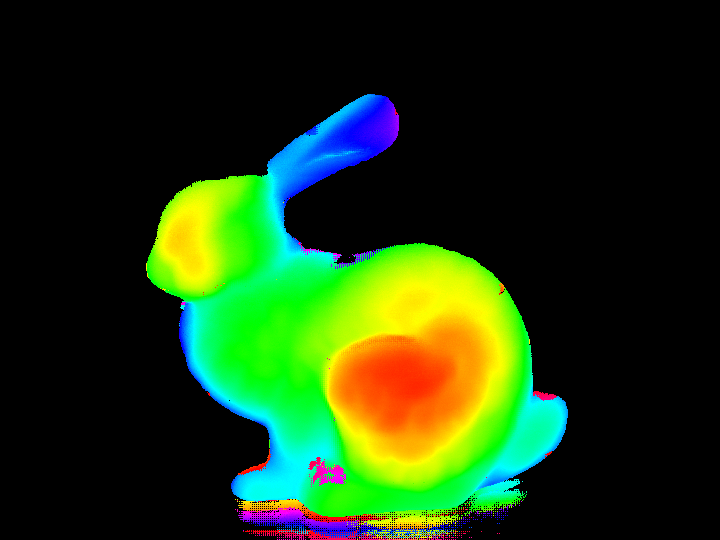
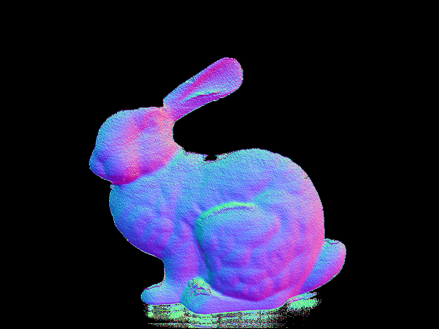
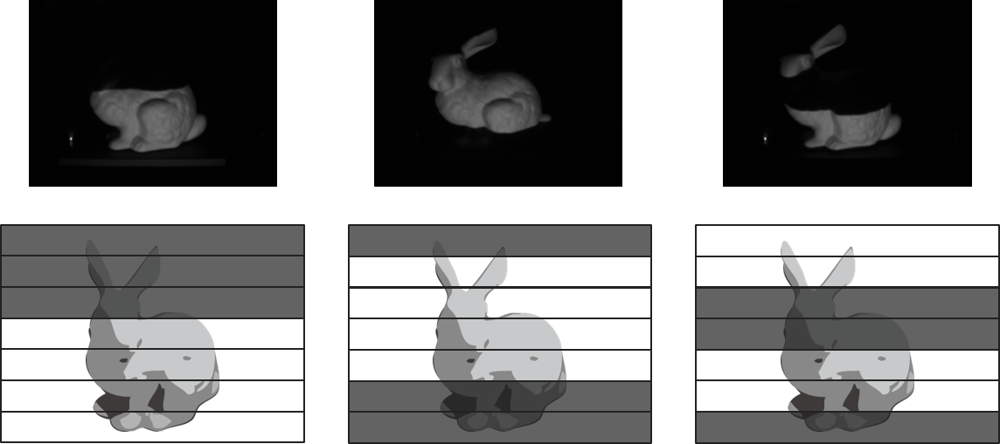

深度取得
位相シフト法によって深度を取得
 
位相シフト法によって得られた深度、深度から計算した法線
7周期のパターン

偏光解析によって得られた法線とその方位角・天頂角
$2^3 = 8$分割のグレーコードを使うのが一般的だが、一度も投影されない領域ができてしまい偏光解析に影響が出るため、000 の値を抜いた 7分割のグレーコードを用いた
問題点
高周波ノイズが発生している
深度から計算した法線は高周波ノイズの影響を強く受け、表面の法線が凸凹してしまう